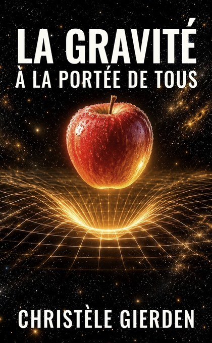

Accueil › Les grandes questions à la portée de tous › La gravité à la portée de tous

La gravité à la portée de tous
De Newton à Einstein, la force qui tient l'Univers — un livre de Christèle Gierden
Pourquoi une pomme tombe-t-elle ? Pourquoi les astronautes flottent-ils ? Comment la Lune soulève-t-elle les océans ? Ce livre vous fait enfin comprendre la gravité, sans équations et sans jargon.
Ce que vous allez comprendre
- Pourquoi un marteau et une plume tombent à la même vitesse sur la Lune
- Comment on a pesé la Terre et découvert Neptune par le calcul
- Pourquoi ce n'est pas l'absence de gravité qui fait flotter les astronautes
- Ce qui crée les marées, et pourquoi la Lune s'éloigne de nous chaque année
- Pourquoi il n'existe pas de fourmi géante, et ce que devient le corps humain dans l'espace
- Comment la gravité allume les étoiles et fabrique les trous noirs
- Le jour où l'on a capté une vibration de l'espace-temps
- Les grands mystères qui restent à résoudre : la matière noire et l'énergie noire
Dans le livre
- Des premières intuitions de Galilée et de Newton jusqu'à l'espace-temps courbe d'Einstein
- Une vingtaine de schémas pour visualiser chaque idée
- Un encadré « L'idée à retenir » à la fin de chaque chapitre
- Des bonus remplis d'anecdotes : votre poids sur les autres planètes, la grenouille en lévitation, le pommier de Newton parti dans l'espace…
- Pour les ados dès 15 ans, les lycéens et les adultes
Dans la même collection
 Les trous noirs à la portée de tous
Les trous noirs à la portée de tousEnvie de le découvrir ?
Le livre est disponible sur Amazon.
Voir « La gravité à la portée de tous » sur Amazon →